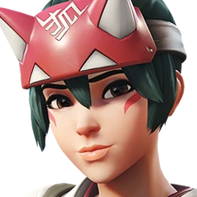

| Tier | Hero | Healing | Utility | Difficulty | Image |
|---|---|---|---|---|---|
| S | Kiriko | High | Cleanse + Teleport | Medium |  |
| A | Ana | High | Anti-Heal + Sleep | Hard | |
| B | Mercy | Medium | Damage Boost + Ressurection | Easy | |
| B | Lucio | Low | Speed Boost | Medium | |
| B | Baptiste | High | Immortality Field | Medium | |
| B | Juno | Medium | Mobility + Utility | Medium | |
| C | Zenyatta | Low | Discord Orb | Hard |
I ranked these Overwatch supports on my personal opinions. I have based it on their healing output, utility, and overall impact in matches. Heroes like Kiriko and Ana are placed higher because of their abilities that can change team fights, while others like Zenyatta require more precision and positioning to be effective. I think that all support heroes can be really good, but that is based on the overal team composition and the player's playstyle.